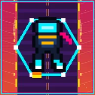
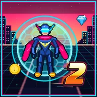
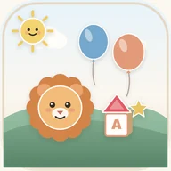

Game Factory
Pazar araştırmasından 2D ve 3D oynanış geliştirmeye, mağaza görsellerinden iOS ve Android yayınına uzanan mobil oyun stüdyosu.
Oyunları gör →Yapay zekâ çağının sistem programlama dili Myelin, mobil oyun stüdyosu Game Factory, çoklu ürün SaaS çatısı Umbrella ve açık kaynak mühendislik çalışmaları tek merkezde.
Derleyici tasarımından mobil oyun geliştirmeye, dağıtık arka uç mimarilerinden kurumsal dijital imza çözümlerine kadar tüm üretim başlıkları.
Pazar araştırmasından 2D ve 3D oynanış geliştirmeye, mağaza görsellerinden iOS ve Android yayınına uzanan mobil oyun stüdyosu.
Oyunları gör →Büyük dil modelleri tarafından yazılmak ve donanım hızında çalışmak üzere Rust ile geliştirilen yetki güvenli sistem programlama dili.
Detayları incele →Çoklu dikey SaaS uygulamaları, elektronik imza, dijital kimlik, ödeme simülasyonu ve sektörel takip platformları.
Ürünlere göz at →Yayınlanan mobil oyunların resmi gizlilik politikaları, veri güvenliği beyanları ve uygulama reklam doğrulama dosyaları.
Belgelere ulaş →Fikirden çalışan ürüne giden mesafeyi kısaltıyoruz. Her projede yalın mimari, ölçülebilir performans ve gerçek kullanıcı değeri önceliğimiz.
Game Factory; pazar analizi, oyun tasarımı, 2D ve 3D oynanış geliştirme, ses ve görsel geri bildirim optimizasyonu ile mağaza paketlemesini tek bir modüler üretim hattında birleştirir.
App Store ve Google Play kategorilerindeki oyuncu beklentileri incelenir; net kontrollere, yüksek tekrar oynanabilirliğe ve dengeli ilerleyişe sahip oyun tasarım dokümanı hazırlanır.
Dokunmatik kontrollere uyumlu 60 FPS sahneler inşa edilir. Partikül efektleri, ekran sarsıntısı, prosedürel ses sentezleri ve yerel dil desteğiyle cilalı bir deneyim sunulur.
iOS ve Android paketleri üretilir; doğrudan çalışan oyun sahnelerinden alınan gerçek ekran görüntüleri, çok dilli mağaza metinleri ve gizlilik belgeleriyle yayına hazır hale getirilir.

Retro Piksel Arcade Koşu · iOS ve Android
Siber Valkyrie ve 7 benzersiz koşucuyla Mercan Gün Batımı, Arktik Buzul, Zümrüt Bio Dome ve Altın Olimpos dahil 10 canlı dünyada son sürat ilerle. Seviye atladıkça açılan 5 güçlendirme, 2 ila 4 şerit arasında dinamik genişleyen otoyollar ve internetsiz 60 FPS retro arcade heyecanı cebinde.
Sürekli karanlık neon klişesini kırmak için 10 farklı gündüz ve gün batımı renk paleti tasarlandı. Şerit değişim tepki süresi, yakın geçiş kombo penceresi ve kademeli güçlendirme keşfi canlı oyun içi testlerle ince ayarlandı; tüm mağaza görselleri gerçek çalışan oyundan otomatik yakalandı.

Sahte 3D Perspektif Arcade Koşu · iOS ve Android
Geliştirilmiş sahte 3D ufuk perspektifiyle yüksek hızlı arcade aksiyonu yeni bir boyuta taşı. 10 panoramik dünya, lazer kilitleri, termal vuruş bölgeleri, kalıcı zırh yükseltmeleri ve 8 seçilebilir kahramanla reflekslerini sına; tek şok dalgasıyla tüm tehlikeleri altına çevir.
İlk oyunun yukarıdan görünümlü yapısından derinlik hissi yüksek panoramik ufuk motoruna geçildi. Titanyum gövde ve şans çipi gibi kalıcı hangar yükseltmeleri eklendi; otomatik iOS derleme boru hattı ve çoklu ekran çözünürlüğü için mağaza varlık üretimi entegre edildi.
3D Pastel Platform Tırmanışı · Yatay Ekran
Çilekli Mochi Kulesi, Matcha Bulutları, Lavanta Rüyası, Gökkuşağı Bulut Sarayı ve Sakura Akşamı kulelerine tırman. Yıldızları topla, itfaiye can kurtaran filesiyle düşüşlerden kurtul ve zirvedeki kalp kilitli kafeslerden 8 sevimli hayvan dostunu kurtarıp 3D bahçeni büyüt.
Tamamen gerçek zamanlı 3D Three.js sahnesi üzerinde yumuşak pastel ışıklandırma, sarmal kamera takibi ve affedici platform fiziği kurgulandı. Cihaz diline göre otomatik Türkçe ve İngilizce arayüz geçişi ile yatay ekran ergonomisi optimize edildi.

1 ila 4 Yaş Montessori Oyun Bahçesi · %100 Reklamsız
12 ila 48 ay çocuklar için aşırı uyarıcı flaşlardan ve reklamlardan tamamen arındırılmış sakin bir keşif dünyası. 3D Ahşap Bloklar, 3D Manyetik Şekiller, Gerçek Akustik Piyano, 29 Harfli Neşeli Alfabe ve Boyama Kitabı dahil 17 eğitici mini oyun, doğal Türkçe seslendirme ve akıllı ebeveyn kontrol paneli bir arada.
Pedagojik Montessori ilkeleri temel alınarak göz yormayan sıcak pastel arayüz, cezalandırmasız pozitif geri bildirim ve yanlışlıkla çıkışı önleyen ebeveyn kapısı geliştirildi. Süre dolduğunda alarm yerine yumuşak Uyuyan Ay ekranıyla dinlenmeye geçiş sağlandı; abonelik baskısı olmadan tek seferlik açılım modeli kuruldu.
Game Factory bünyesinde prosedürel karakter oluşturma ve evrim mekanikleri sunan MorphForge motorunun yanı sıra; çok oyunculu aksiyon, arena dövüşü ve strateji türlerinde Fatal Strike, Gate Breaker, Pocket Realm ve Smash Heads prototipleri aktif olarak geliştirilmektedir.
Derleyici mimarisinden dağıtık .NET sistem desenlerine, veri setlerinden otomasyon araçlarına kadar kaynak kodu herkese açık tüm projeler.
Otonom yapay zekâ çağında büyük dil modelleri tarafından yazılmak, donanım hızında çalışmak ve insanlar tarafından tek satır kaynak kod okumadan matematiksel yetki manifestosuyla denetlenmek üzere sıfırdan tasarlanan sistem dili.
Süslü parantez ve tekrarlı kalıp yükünü ortadan kaldırır. Yaklaşık 900 token boyutundaki SKILL.md tanımı ve tek satırlık myelinc check --llm onarım çıktısıyla ajan üretim döngüsünü hızlandırır.
Derleme zamanı referans sayımı ile bellek güvenliğini çöp toplayıcı duraklamaları olmadan sağlar. Windows, Linux ve macOS için sıfır bağımlılıklı hazır myelinc ikili paketleri sunar.
Örtük işletim sistemi yetkisi yoktur. myelinc audit komutu dosya (!fs), ağ (!net), veritabanı (!db) yetkilerini, sözleşmeleri ve SHA 256 parmak izini raporlar.
Dağıtık sistemlerde veri tutarlılığı ve güvenilir olay iletimi için Event Sourcing ve Outbox Pattern desenlerini birlikte uygulayan referans proje.
.NET 8 yerleşik Rate Limiting mekanizmalarını gerçek hayat senaryolarıyla karşılaştıran ve doğrulayan örnek uygulama ve test paketi.
ASP.NET Core, Blazor WebAssembly ve EF Core üzerinde modüler monolit yaklaşımla çoklu alan destekli SaaS şablon çalışması.
Belirlenen web kaynaklarından yapılandırılmış veri toplayan ve sonuçları özel bir gösterge paneli üzerinden izlemeye imkân veren uygulama.
Türkiye genelindeki tüm il, ilçe ve mahalle verilerini ilişkisel MSSQL veritabanlarına saniyeler içinde aktarmak için hazır SQL betikleri.
Kapalı kaynaklı ürün aileleri, dikey SaaS girişimleri ve sektörel yazılım çözümlerinin ürün odaklı özeti.
Yeni bir SaaS ürününü haftalar yerine günler içinde pazara çıkarmak için tasarlanmış modüler platform çatısı. Ortak kimlik doğrulama, abonelik yönetimi, özellik kilitleme ve merkezi portal altyapısı sayesinde web sitelerine gömülebilir yapay zekâ sohbet asistanı (Embedo) başta olmak üzere birden fazla dikey ürün tek çekirdek üzerinde ölçeklenir.
Kurumsal elektronik imza, mobil imza istemcileri, komut satırı imzalama araçları, PDF belge işleme ve dijital kimlik doğrulama akışlarını güvenilir biçimde yöneten yazılım ürünleri.
Ödeme terminali ve POS entegrasyon senaryolarının canlı donanım bağımlılığı olmadan güvenli test edilmesini sağlayan simülasyon ve doğrulama altyapısı.
Modern TypeScript ve Next.js tabanlı yapay zekâ sohbet arayüzleri, Python tabanlı kurumsal servis veri aktarım araçları ve tekrarlayan geliştirme işlerini hızlandıran kod üretim sistemleri.
Servis takip platformları, dijital kurye operasyon yönetimi, uluslararası öğrenci takip sistemleri, kişisel not uygulamaları ve sektörel kurumsal web projeleri.
Muscan Software Factory tarafından geliştirilen mobil uygulamaların mağaza uyumlu gizlilik politikalarına ve reklam doğrulama dosyasına aşağıdan doğrudan erişebilirsiniz.
Açık kaynak çalışmalar, Game Factory oyunları veya ticari yazılım çözümleriyle ilgili tüm sorularınız için doğrudan ulaşabilirsiniz.